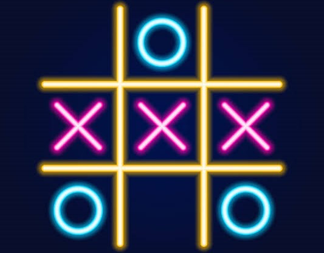

این پروژه پیادهسازی بازی دوز است که در آن دو بازیکن میتوانند بهصورت نوبتی خانههای جدول را انتخاب کنند و برای ساختن یک ردیف کامل تلاش کنند. تمرکز اصلی این پروژه روی طراحی منطق بازی، بررسی وضعیت برد یا مساوی و مدیریت نوبت بازیکنان بوده است. این پروژه نمونهای خوب برای تمرین شرطها، آرایهها و ساخت یک بازی ساده اما کاربردی است.